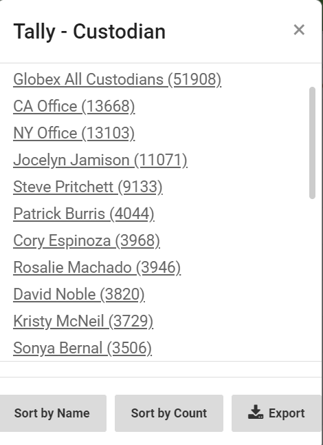
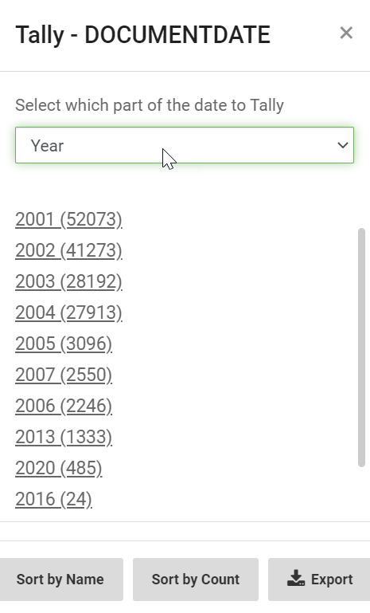
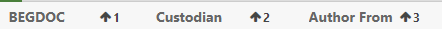
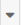

Click the Column Heading to open the Sort option. This allows you to sort ascending or descending.

Columns (the fields and tag groups included in the Results grid) can be manipulated in the following ways in both the Results grid in Visual Search and the Results tab in Advanced Search. Some activities require specific permissions.
Documents may be sorted and filtered to help you locate what you need more quickly.
Click the Column Heading to open the Sort option. This allows you to sort ascending or descending.
|
|
Note: Once documents are selected, changing the sort of any grid column will clear all selected documents. |
To filter search results based on column data:
In the heading of a column you want to filter, enter the term in the filter box.

Click Enter to run the search. The filter search will appear above the grid.

|
|
Note:
|
To filter by one or more additional columns:
Select your column and add the term to the filter box.

Click Enter to run the search. The additional filter search will appear above the grid.

|
|
Note: Filters on different columns are treated as AND statements. |
When finished, the results will be displayed. The number of filtered search results will be displayed at the bottom of the page in Visual Search.

Alternatively, the results are displayed on the Results Tab in Advanced Search.

|
|
Note: The results from filtering can not be saved as is. The original search must be modified to include the filters, or the results must be tagged and a new search created. |
To remove a filter, click  next to the search above the column header row, or the
next to the search above the column header row, or the  button on the far right.
button on the far right.
You can customize your grid view by clicking  in the column heading. This opens the grid view options.
in the column heading. This opens the grid view options.

Clicking on the menu item opens the option. See below for descriptions of each one.
Pin Column
Includes options to pin left or right.

Autosize This Column
Change the column width based on the data.
Autosize All Columns
Change all column widths based on the data.
|
|
Note: Column width can also be changed by the below:
|
Tally
Provides a count of the occurrences of a value within the selected field. For example, if you tally the Custodian field, the Tally dialog box lists all the Custodians and the number of times each Custodian occurs.

|
|
Note: If a search was run, the results and counts are limited to the results of that search. |
To display results for a specific item in the tally results, click that item's link. The grid refreshes and displays only those documents that contain that value. If required, further filtering may be done from the results.
For more instructions on working with tallies, click
When you tally a column, you have additional options you can work with:
If the field being tallied is a DATE field, on the drop-down menu select how you want the date tallied (Year, Month, Day).

Click Sort by Name to sort the list of tallied items in alphabetical order.
Click Sort by Count to sort the list of tallied items by document count. Items that have a higher document count appear first in the list.
Click Export to export the list of tallied items to a CSV file. The CSV is downloaded to your machine, and breaks the list of tallied items into two columns: Name and Count.
To display results for a specific item, select the link for that tallied item. To clear the tally or tallies, click located on the right side above the column heading row.
Column Hide/Show
The BEGDOC column displays by default. If you have been given the required permission, you can show and organize the columns (fields) in the grid to meet your review requirements. This applies to all columns except the leftmost column (the Native File Link column).
When you open this option, a menu appears:

The Available Columns and Selected Columns can be filtered to quickly find fields.
Click the filter icon or enter text in the box.

Clicking on a field in the Available Column will automatically add it to the Selected Column. The  next to the field name indicates that it has been added to the grid view.
next to the field name indicates that it has been added to the grid view.
Clicking on a field in the Selected Column will automatically add it back to the Available Column.
Change the order of your selected fields by right clicking and dragging up and down the list.
After all selections have been made, click OK.
Reset Columns
Resets all columns to the default width.
|
|
Note: To move a column to a different position, point, click and drag the column to the desired location. |
The grid columns can be organized based by field content. A number of fields can be defined for sorting. When you sort based upon multiple fields, the order of the sorting is based on the order in which the fields are selected.
By default, the search grid is sorted by the BEGDOC column. If a batching order was specified for the review pass, the grid will be sorted according to those three fields indicated for the review pass as well as the defined sort by (ascending or descending) order.
Up to three fields may be defined for sort order when setting up an Advanced Search. If this is the case, those column fields will reflect the chosen order (1, 2, 3) and the sort by (ascending or descending) order when entering the results grid for the first time after saving the advanced search settings.
To specify sort order:
Hold down the CTRL key and begin to click each column field heading in the desired sort order. Each time a column heading is clicked, a number displays to indicate the sorting order shown as follows:

By default, the field columns are sorted in Ascending order (lowest to highest).
|
|
Note: Clicking the same field again in succession changes the default sort order from Ascending to Descending . |
To change to descending order for a column field, press the shift key and click the to change to descending order (highest to lowest). To change from descending order back to ascending order, press the shift key and click .
|
|
Note: The ascending or descending sort order may be changed by accessing the menu. Click .  and choose the desired order. |
Evaluate the sort order. To make changes, do any of the following:
|
|
Note: The last clicked column field heading displays an ascending arrow . |
Related Topics